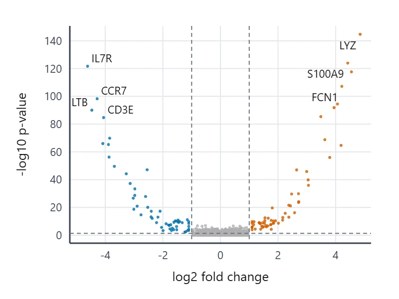
Volcano plot
Log2 fold change against -log10 p, with threshold guides and the top genes labelled.
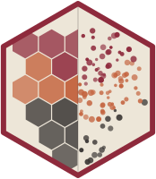
Interactive omics figures for R, Python and the web.
Volcano plots, heatmaps, embeddings, oncoprints, survival curves, networks and genome browsers. WebGL and canvas rendering from one TypeScript core, wrapped for Shiny, Jupyter and plain web pages.
Plotomics Live is a live gallery of 26 biological visualizations, most of them drawn with plotomics and shown next to the same plot made with ggplot2. The app is built with shinyreact (source).
plotomics is a set of visualization widgets for omics data, built on one TypeScript rendering core and wrapped for R with htmlwidgets and for Python with anywidget. Rendering runs on WebGL or canvas, and Python sends numeric columns to the browser as a binary buffer instead of JSON, so plots stay interactive at hundreds of thousands of points.
The same figure works in a Jupyter notebook, a Shiny app, the RStudio Viewer, Quarto or a plain web page. Try seven of the components live below, or see all 17 in the gallery.
install.packages("plotomics")Load it with library(plotomics). Widgets render in the RStudio Viewer,
R Markdown, Quarto and Shiny.
R carries 15 of the 17 components. The genome browser pair, igv.js and Gosling, is JavaScript and Python only, because their bundles push the installed R package past the 5 MB limit that CRAN sets.
pip install plotomicsWorks in Jupyter, JupyterLab, Colab, VS Code, marimo, Shiny for Python and Streamlit.
pnpm add plotomicsHeadless factories with tree-shakeable subpath imports, for example
plotomics/embedding.
These seven plots run live in the page, on synthetic data, with the code that the R and Python packages ship. On every tab, hover over a mark to read its values. In the embedding, the volcano, the network and the Hi-C map, scroll to zoom in and drag to pan while zoomed; the reset button in the corner, or a double-click, brings back the whole plot. In the embedding, hold Shift and drag to lasso cells, and in the network, click a node to select it.
The plot loads when this part of the page comes into view.
One core for three languages. Each component is written once, in TypeScript. The R package wraps it with htmlwidgets and the Python package with anywidget, so the wrappers stay thin and an R figure and a Python figure come from the same code. Read the architecture.
Numeric columns sent as binary. Python packs numeric columns into one buffer that the browser reads as typed arrays, with nothing to parse. A million floats are 4 MB that way, against about 20 MB of JSON. R sends JSON arrays, and both paths end in the same data object. See the data transport.
GPU rendering. The scatter plots, the expression heatmap and the Hi-C map draw with WebGL through regl-scatterplot and regl, the network through sigma, and the Gosling viewer through PIXI.js. The other plots draw on a 2D canvas. No component makes one DOM node per data point. See the engine of each component.
Vector text, SVG and PNG export. Axes, legends and labels are SVG drawn over the canvas, so text stays sharp. Each component exports SVG and PNG with those parts in place. Two are limited by their upstream engine: the Gosling viewer exports PNG only, and the igv.js viewer SVG only. See the export methods.
Themes. A theme sets the colours, the font, the font size and the
padding, and every text size scales with the font size. A colour can be a CSS variable
such as var(--bg), read on the plot's element, and the core ships a dark
theme. See the theme options.
Selections sent back to R and Python. A lasso on the embedding sets
input$<id>_selected in a Shiny app and widget.selected in
Python, and a click on a network node does the same with the node's id.
See the Shiny bindings.
Missing values drawn as missing. NA, NaN and
Inf from R, and None, NaN and pandas
NA from Python, reach the browser as missing. Every plot shows them as a grey
cell, an open ring, an "NA" legend key or no mark, never as 0.
See the changelog.
Each plot is an htmlwidget. It shows in the RStudio Viewer, R Markdown and Quarto, and
each one has an Output() and render() pair for Shiny.
km()
takes a survfit object as it is.
library(plotomics)
library(survival)
fit <- survfit(Surv(time, status) ~ sex, lung)
km(fit)Each plot is an anywidget, so it displays in a notebook cell. It takes a pandas or
polars data frame or a dict of arrays, and a lasso selection comes back as
widget.selected.
import numpy as np
from plotomics import Embedding
k = np.random.randint(0, 8, 100_000)
x, y = np.random.randn(2, k.size) + 3 * k
Embedding(dict(x=x, y=y, color=k.astype(str)))Each component is a headless factory: give it an element and columns, and it returns a
plot with setData, setOptions, resize, export and
destroy methods. With a bundler and a <div id="plot"> in
the page, this draws a volcano plot.
import { createVolcano } from "plotomics";
const r = () => 8 * Math.random() - 4;
const x = new Float32Array(2e4).map(r);
const y = x.map((v) => Math.abs(v * r()));
const el = document.querySelector("#plot");
createVolcano(el, { data: { columns: { x, y } } });All 17 components, grouped as in the R reference. Each image is the component's own export of synthetic data, and the links under it open its reference page in each language.

Log2 fold change against -log10 p, with threshold guides and the top genes labelled.
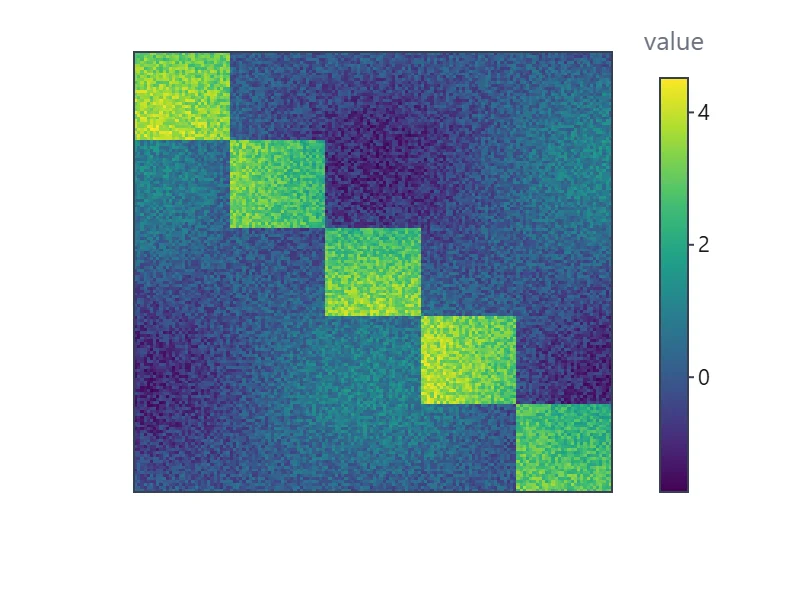
A large sample by gene matrix drawn as a GPU texture, with optional row z-scores.
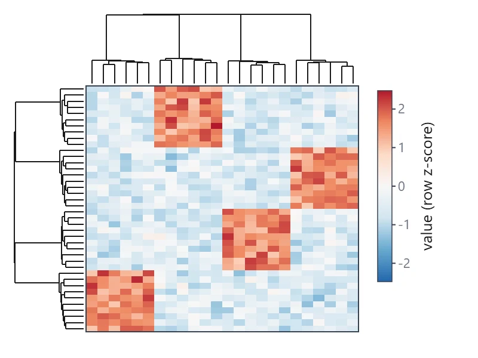
Row and column dendrograms around the matrix, in the seaborn.clustermap layout.
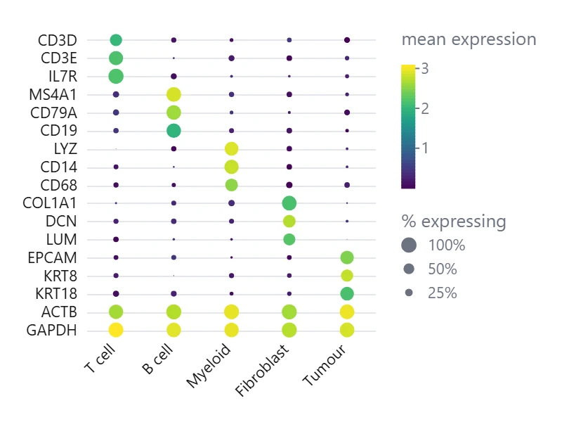
Dot area for the share of cells expressing and colour for the level, as in scanpy and Seurat.
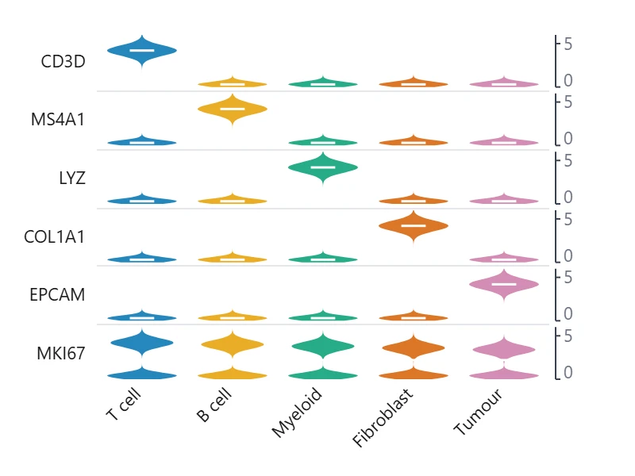
One row per feature and one violin per group, from densities computed in R or Python.
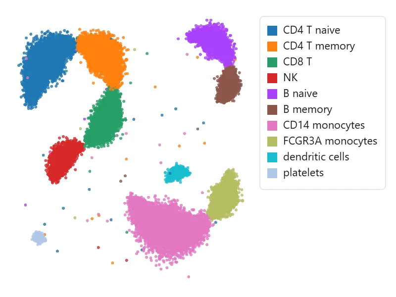
UMAP, t-SNE and PCA scatter at hundreds of thousands of cells, with lasso selection.
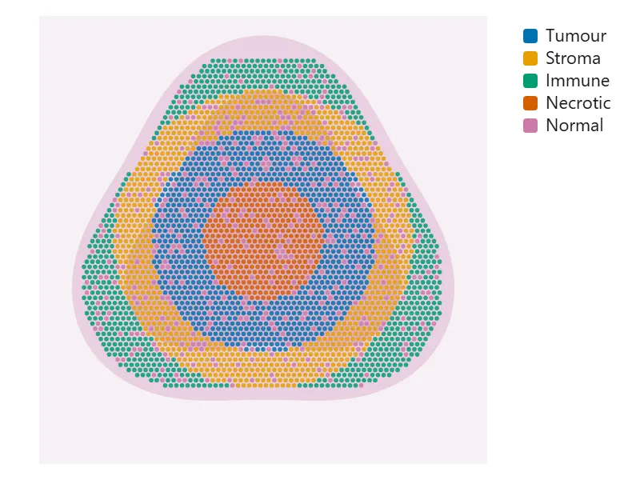
Visium-style spots over the H&E image, coloured by cluster or by a gene.
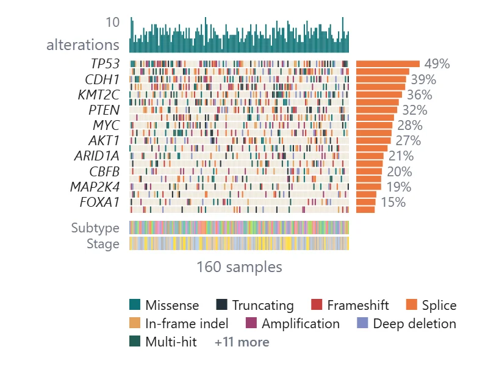
Gene by sample alteration classes, with burden and frequency margins and clinical strips.
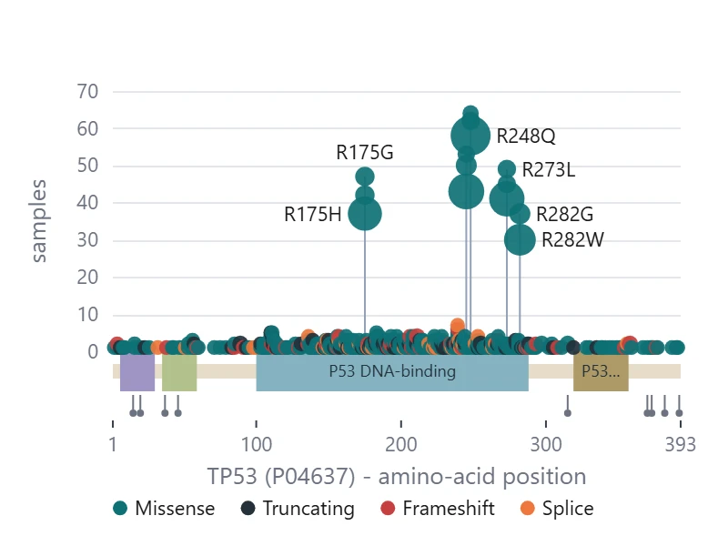
Variants along a protein over its domains, with head area set by recurrence.
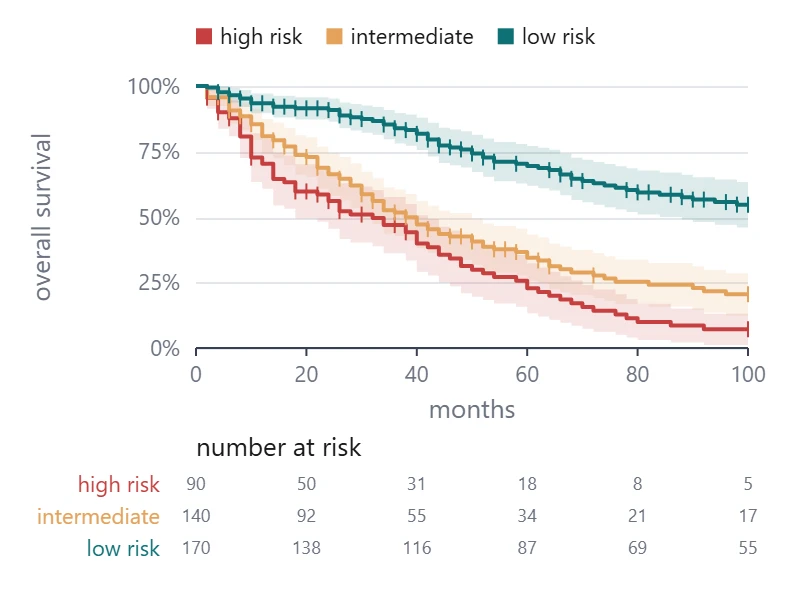
Survival steps with censoring ticks, confidence bands and a number-at-risk table.
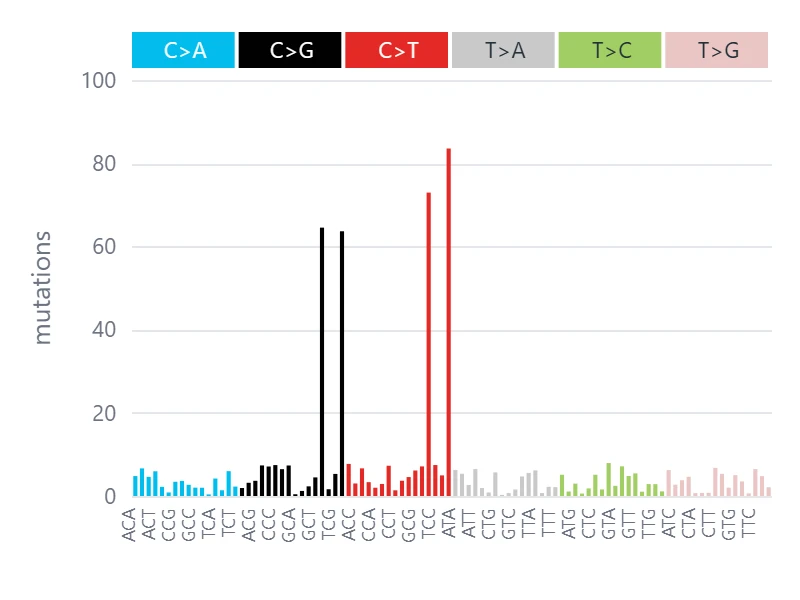
The SBS96 mutational signature layout: 96 contexts under six substitution blocks.
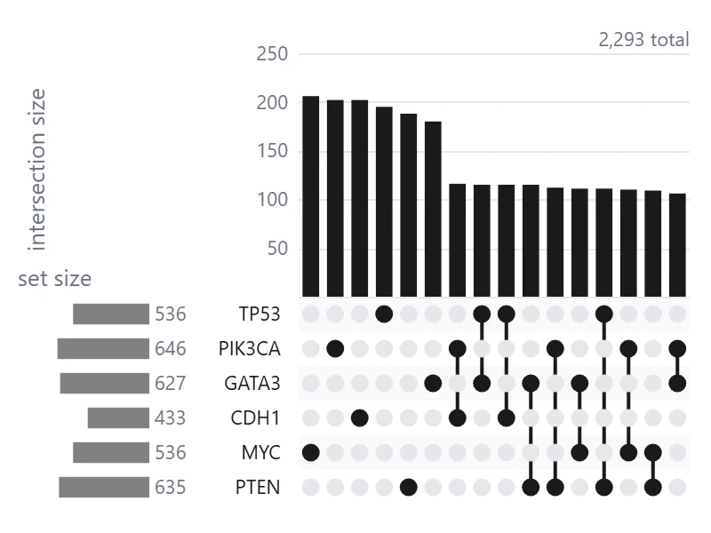
Intersection sizes over a set membership matrix, for more sets than a Venn diagram can draw.
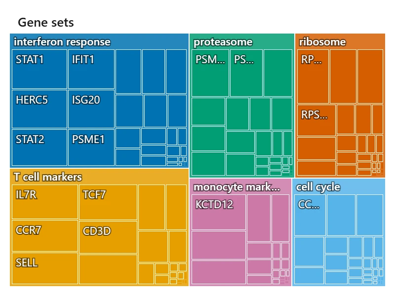
Gene sets and pathway composition as nested tiles, coloured by parent or by value.
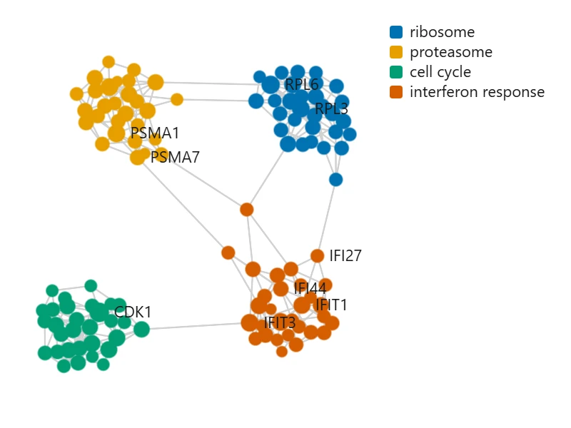
Force-directed interaction, co-expression and regulatory graphs, drawn with sigma.
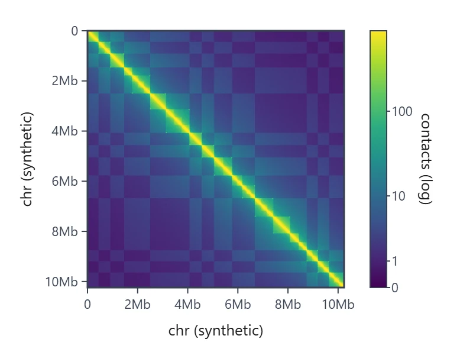
Hi-C and Micro-C contact maps with a level-of-detail pyramid and no tile server.
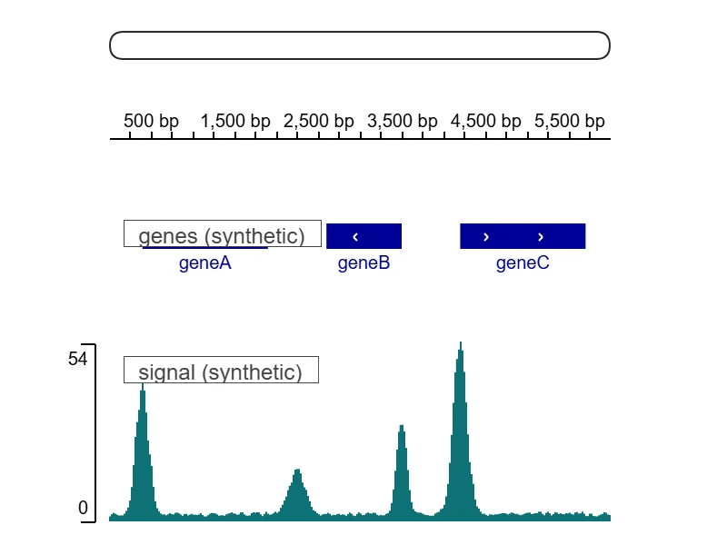
A track browser for BAM, BigWig, VCF, BED and refGene data, streamed by igv.js.
Not in the R package
Python IGV
JS createIgv
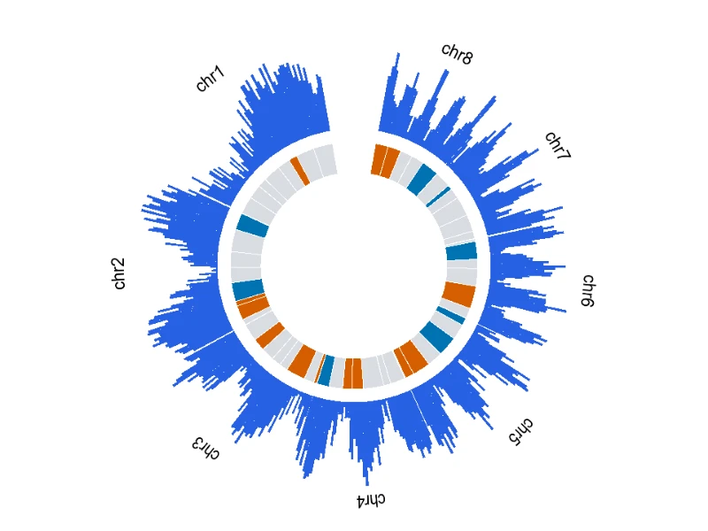
Declarative genomics figures from a Gosling spec: circos, ideograms, linked views.
Not in the R package
Python Gosling
JS createGosling
I built plotomics because I kept hitting the same wall in my own work. A 500,000-cell embedding or a 20,000-gene volcano plot is common today. Most plotting tools were built for a few thousand marks. Past that count, a figure stops being readable before the data stops being interesting.
A second problem had nothing to do with size. My work runs on both R and Python, so the same figure gets built twice, once per language, and the two copies drift. I draw a heatmap in R and a different one in a Python notebook, and I cannot say which one is correct without reading both.
So I write each component once and wrap it thinly for both languages, so the notebook and the paper agree. plotomics is not a general plotting library by design, and for a small, static figure, better tools already exist. Read the full motivation for the goals, the non-goals, how it compares with ComplexHeatmap, maftools, survminer, Seurat and scanpy, and when to use one of those instead.
For the scatter alone, plotly comes close. plotly.js has a WebGL trace,
scattergl, and it draws a million points. The default SVG
scatter trace is the one that emits one DOM node per point and gives out in
the low tens of thousands. The differences are narrower:
Against that, plotly is far more general, more mature and better documented. For a chart that is not one of the 17 components, plotly is the better tool.
If plotomics contributed to work you publish, please cite it:
Bharti, S. (2026). plotomics: High-Performance Bioinformatics Visualizations. Zenodo. https://doi.org/10.5281/zenodo.21926306
@software{bharti_plotomics,
author = {Bharti, Samuel},
title = {plotomics: High-Performance Bioinformatics Visualizations},
year = {2026},
publisher = {Zenodo},
doi = {10.5281/zenodo.21926306},
url = {https://github.com/samuelbharti/plotomics}
}That DOI is the Zenodo concept DOI: it always resolves to the newest release. Zenodo also
gives each version a DOI of its own, for when you need to pin the exact release you ran.
In R, citation("plotomics") gives the entry with this DOI, and
CITATION.cff
carries the same metadata for GitHub's "Cite this repository" button.